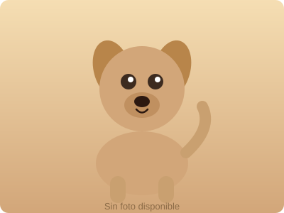

Conoce la historia y las personas que hacen posible nuestra labor
La Protectora de Animales de Burjassot nació de la unión de un grupo de vecinos comprometidos con el bienestar animal que decidieron hacer algo para ayudar a los animales abandonados de la ciudad.
Desde entonces, hemos rescatado, cuidado y encontrado hogar para cientos de animales. Somos una asociación sin ánimo de lucro que funciona gracias al voluntariado y a las donaciones de personas comprometidas como tú.
Nuestra misión es clara: ningún animal debería quedarse sin hogar. Trabajamos cada día para hacer eso posible.

Tratamos a cada animal con el amor y el respeto que merece, independientemente de su estado o historia.
Nos comprometemos con cada animal hasta que encuentra un hogar definitivo y seguro.
Promovemos la tenencia responsable y la esterilización como pilares del bienestar animal.
Creemos en el poder de la comunidad. Juntos podemos cambiar la vida de muchos animales.
Todas las personas que forman parte de la protectora son voluntarias. ¡Gracias a todas ellas!
Coordinación general y representación
Gestión administrativa y documental
Gestión económica y cuentas
Cuidado, paseos, eventos y adopciones